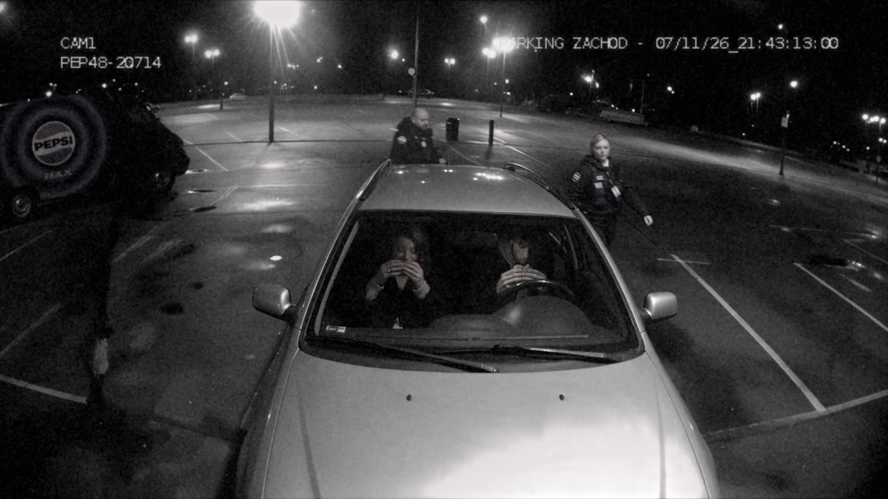
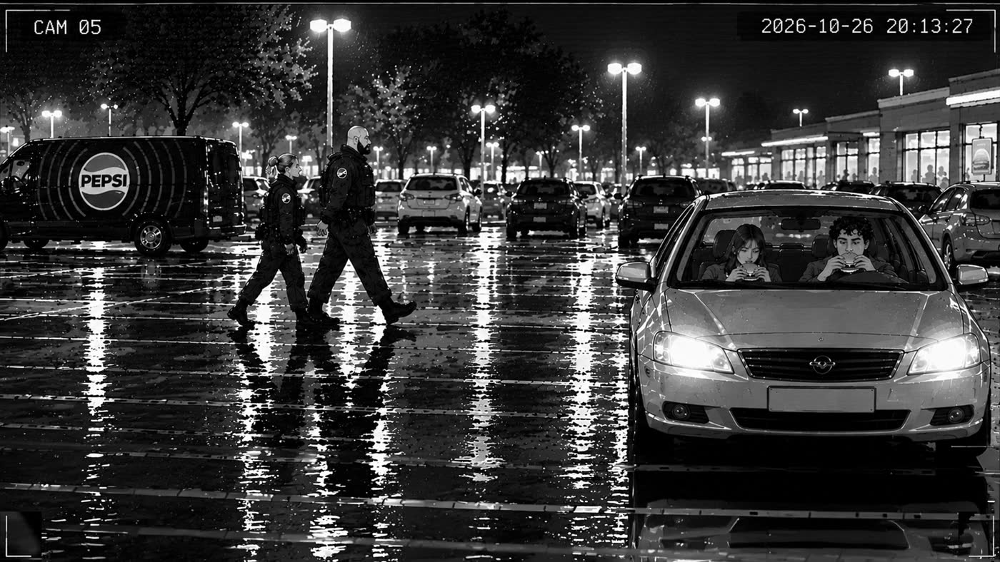
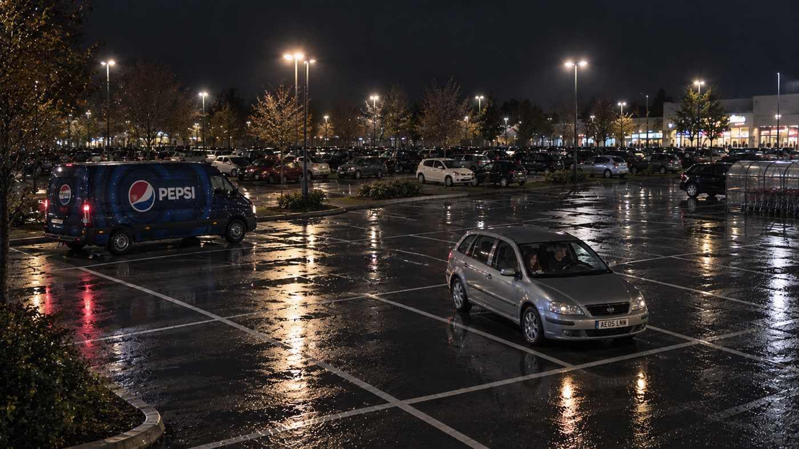

← Серия · ЭПИЗОД 01 · ЕДА ВНЕ ДОМА · 30 с
SodaStop
Ночная парковка. Пара ест бургеры в машине. Pepsi Patrol стучит в окно — есть без Pepsi MAX — серьёзное нарушение.
Коротко
Задача
Адаптировать британский фильм «SodaStop» для Pepsi MAX Польша: 30 секунд, которые зритель примет за настоящую съёмку, — полностью на генеративном AI.
Решение
CCTV превращается в кино. История начинается как запись камеры наблюдения, становится ручным репортажем невидимого любителя — и возвращается к CCTV для приговора.
Результат
Готовый 30-секундный фильм на польском с языковыми версиями, сданный как ТВ- и веб-мастера от 4K ProRes до H.264.
Бриф
Бриф клиента задавал сценарий, польские реплики и покадровый тайминг. Референс был чётким: британские фильмы SodaStop — документальные, сырые, с абсолютно серьёзным юмором. И планка качества: результат не должен выглядеть как AI.
Сделать искусственное настолько несовершенным, чтобы его приняли за настоящее.
В этом главный вызов проекта. Генеративные модели обучены делать красиво. Нам нужно было обратное: свет парковки, случайное кадрирование, люди, которые не знают, что они в рекламе.
Режиссёрское решение
На обычной вечерней парковке Войцек и Ева спокойно едят в машине, пока их не прерывает Pepsi Patrol: Ага и Дарек обнаружили серьёзное нарушение — еду без Pepsi MAX.
Три ракурса CCTV держат географию: прибытие, вид сбоку во время операции, уход под финальные титры. Между ними — ручная камера любителя, который везде, но никогда не входит в историю: ни голоса, ни смешка, ни дыхания.
Сонное начало → стук в стекло → Ага тараторит обвинение как дорожный полицейский, гипнотизируя подозреваемого → микропауза растерянности → самый длинный кадр — первый глоток и сдержанное «Wow» → снова быстрая комедия → долгий CCTV-финал под титры.
Войцек подчиняется любому, кто звучит достаточно уверенно. Ева первой разгадывает правила и принимает свою банку почти по-королевски. Они никогда не выходят из машины — патруль всегда работает со стороны водителя.
От сториборда до экрана
Сториборд из тритмента (слева) и финальные кадры (справа). Структура удержалась; детали менялись там, где этого требовал фильм, — например, синяя банка стала чёрной slim Pepsi MAX.


Кадр 01 · 00:00CCTV-1. Знакомство: фургон, машина, патруль уже идёт.
Кадр 02 · 00:02Войцек и Ева едят. Стук в стекло.
Кадр 03 · 00:03Ага показывает удостоверение и объявляет нарушение.
Кадр 04 · 00:07Банка с трубочкой — как алкотестер.
Кадр 05 · 00:12Первый глоток. «Wow».
Кадр 06 · 00:17CCTV-2. «Лучше, правда? Дарек, подойдёшь к даме?»
Кадр 07 · 00:19Дарек приносит Еве её банку.
Кадр 08 · 00:22«А вообще… вы из охраны?»
Кадр 09 · 00:24«Нет. Мы из Pepsi».
Кадр 10 · 00:26CCTV-3. Дело закрыто. Финальные титры.
Кастинг и мир
До генерации движения мир был зафиксирован: кастинг, костюмы, машина, фургон, локация, продукт. У каждого референса ровно одна задача — чтобы модель не смешивала лицо с парковкой.
Видеопробы
Каждый новый персонаж получил видеопробу ещё до генерации первого плана. Переключите на «В фильме», чтобы увидеть и услышать того же человека в фильме; динамик включает звук, клик — увеличивает.
Бейдж, жилет, взгляд: полный разворот и та самая невозмутимость, на которой держится вся серия.
Габариты и теплота в одном полуобороте: большой мужчина, который никогда не выглядит угрожающе.
Мягкое, податливое лицо: человек, который верит каждому, кто говорит достаточно уверенно.
Рыжие волосы и прохладное, немного королевское спокойствие — та, что сначала читает правила.


Производство
Пайплайн, построенный после неудачной первой попытки. Первая версия была живой, но каждая правка её разваливала. Версия 2.1 началась снова с самого тритмента.
- 01
Тритмент → шот-лист
Шот-лист на 30 секунд с точным таймингом и правилами камеры для каждого кадра.
- 02
Референсы
Отдельные листы: локация без людей, экстерьер машины, салон, четыре персонажа, продукт.
- 03
Генерация одним проходом
Seedance 2.5 Multishot в Magnific: весь 30-секундный фильм одним проходом с точными склейками. Пятый черновик стал основой.
- 04
Точечные правки
Отдельные кадры заменены, финальный CCTV сгенерирован отдельно, банка перекрашена на посте.
- 05
Апскейл
Topaz Proteus ×2 до 4K — на этом материале лучше альтернатив сохранил лица и фактуру.
- 06
Монтаж, цвет, титры
After Effects: монтаж, цвет, дефекты камеры, CCTV-интерфейс, титры пекшота на четырёх языках.
- 07
Звук
Стемы диалога, фоли, атмосферы и музыки, сведённые по EBU R128: −23 LUFS для ТВ, −14 LUFS для веба.
Проблемы и решения
Первая версия разваливалась от правок: каждая правка рождала новые баги.
РЕШЕНИЕНовый старт от тритмента. Весь фильм генерируется один раз ради цельности, дальше — только хирургические правки, без полной перегенерации.
Слишком много референсов превращались в «кашу»: лица, машина и локация смешивались.
РЕШЕНИЕОдин референс — одна задача. Персонажей «сажаем» в сцену только на ключевых кадрах.
Модель не держала бренд: банка меняла цвет и этикетку.
РЕШЕНИЕПерекраска на посте: трекинг объекта и цветовая маска на каждом кадре — чёрная slim Pepsi MAX в каждом плане.
Персонажи на заднем плане в кадре «Wow» выглядели застывшими.
РЕШЕНИЕПробовали лёгкое дыхание и моргание — оба читались как брак. Кадр остался как есть: неподвижное лицо заметно меньше, чем фальшивое движение.
AI-изображение слишком чистое для документалки.
РЕШЕНИЕСлой дефектов настоящей камеры — хроматическая кайма, ореол, мягкие края, виньетка, зерно; CCTV обесцвечено, со своим экранным интерфейсом.
Липсинк для других языков делал лица пластиковыми.
РЕШЕНИЕВместо дубляжа — закадровый перевод: изображение остаётся нетронутым.
Изображение и звук
Нейтральная, слегка холодная вечерняя палитра; салон уведён от рыжего, насыщенность снижена. Синий и красный Pepsi — единственные контролируемые акценты. CCTV чёрно-белый, дефекты камеры на нём вдвое слабее.
Сначала естественный звук: атмосфера парковки, обёртки, банка, трубочка. Лицензированный трек клиента звучит плоско, «как с улицы», и раскрывается в полную силу на гудке в конце.
Технический паспорт
Титры
- Режиссёр
- Андрей ТимощукРежиссёр · AI-продакшн · монтаж · цвет · звук
- КЛИЕНТ
- Pepsi MAX Польша
- По мотивам
- британской кампании Pepsi MAX «SodaStop»
- Инструменты
- Magnific (Seedance 2.5, Seedream, Nano Banana, голоса ElevenLabs) · Topaz · After Effects · Python / ffmpeg · Claude